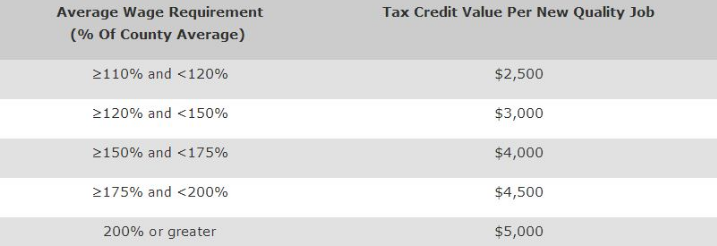

Desribed by many as a small town vibe with big city offerings, Savannah is a mecca of art, innovaiton, history, amd progress.
And while more than 13 million visitors call on Savannah each year, it's the people who settle in this city who truly discover everything that is Savannah.
With the largest landmark historic district in the nation more art galleries per capita than New York City, 22 grassy moss-draped squares, award-winng restaurants, nights filled with live music and film festivals and weekends relaxing on the beach, the good life is here.
Savannah has everyting oyu need to succeed including a creative talent pipeline, operating costs 30% lower than competing cities and an infrastructure that enables young companies to grow
Savannah is a unique city and like any city,entity, business or individual; it has to play to its strengths. The culture and lifestyle in this historic city are made up of the perfect mix of history, creativity, and southern pride, all fed by many different industries and backgrounds. Old Savannah Families, soldiers from Hunter, shipping and industry tycoons, tourists, and artists from SCAD all mix together to create a special brew. This is a city designed for small creative companies, your business can thirve here and you can enjoy the finer things about life at the same time.
”In 2016, SEDA created the Savannah Creative Technologies Incentives. The incentives, partnered with Georgia's existing incnetives, are designed to help grow and attract creative technology jobs and investment to Chatham County. The Savannah Creative Technologies Incentives are avaiable for qualified businesses. There are two tiers to the incentive.
Georgia offers tax incentives and credits to Georgia businesses through the GEORGIA DEPARTMENT OF ECONOMIC DEVELOPMENT (GDECD) . These tax credits give Georgia businesses the opportunity to minimize or even eliminate state corporate income tax. They apply to all qualifying companies – large, small and in between – rooted in Georgia or new to the state. Typically, corporate income tax credits apply to 50 percent of a company’s state tax liability in a given year. But in some cases, they can offset up to 100 percent of corporate income tax as well as payroll withholding liability.
THE JOB TAX CREDIT is a tax credit that helps fuel company expansion by rewarding job creation. In Georgia, job credits provide as much as $4,000 in annual tax savings per job for up to five years. They’re available to businesses (or their headquarters) in seven strategic sectors:
THE QUALITY JOBS TAX CREDIT is another job tax credit for jobs that pay higher-than-average wages. It can give Georgia companies a significant tax break and help drive growth. The Quality Jobs Tax Credit rewards companies that create at least 50 jobs in a 12-month period – provided the jobs pay wages that are at least 10 percent higher than the county average for wages. The following table shows the value of the Quality Job Tax Credit for each job and its percentage over the county wage average. Currently, the average annual wage in Fulton County is $1,277 weekly or $66,404 annually.
RESEARCH AND DEVELOPMENT (R&D) TAX CREDITS are a valuable benefit for companies developing new products and services in Georgia. R&D tax credits are available to any company that increases its qualified research spending. Brand new companies, existing companies embarking on R&D for the first time, established companies expanding their R&D budget – all are eligible for R&D tax credits. The tax credit earned is a portion of the increase in R&D spending. The credit can be used to offset up to 50 percent of net Georgia income tax liability, after all other credits have been applied. Any unused R&D tax credits can be carried forward for up to 10 years. In addition, excess R&D tax credits can be used against state payroll withholding.
RETRAINING TAX CREDITS enable Georgia businesses to offset their investment in employees. Whether retraining workers to use new equipment or new technology or upgrading the company’s competitiveness with ISO 9000 training, companies can afford more training, more often, thanks to Georgia’s tax credit program. Businesses can receive a tax credit of 50 percent of their direct training expenses, with up to $500 credit per full-time employee, per training program. The annual maximum of the credit amounts to $1,250 per employee. Eligible expenses include: